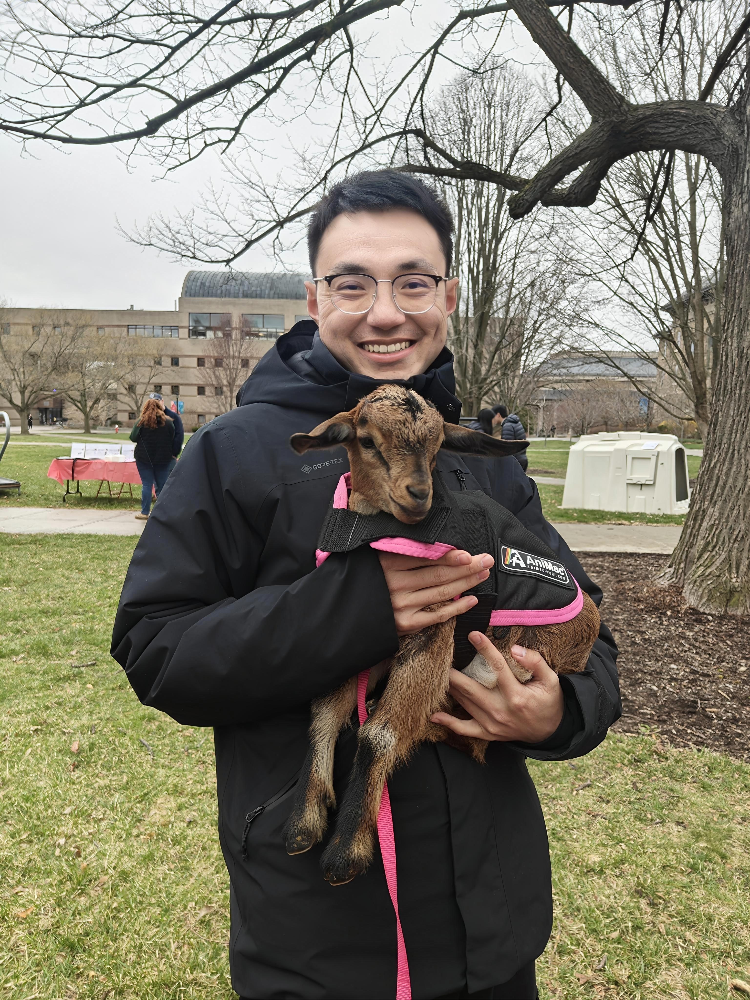

Feiyu Wang
PhD Candidate, Dyson School, Cornell University
I am a PhD candidate at the Dyson School working on empirical industrial organization, international trade, and quantitative marketing. In 2026–2027 I will be a visiting PhD student at the Stanford Doerr School, continuing these research interests with a focus on firm behavior and market structure across global and digital markets.
Contact
- Email: fw273@cornell.edu
- GitHub: feiyuwangdash